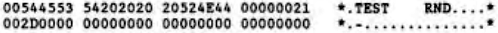

Scorpio News |
April–June 1987 – Volume 1. Issue 2. |
| Page 43 of 51 |
|---|
This may have been stating the obvious as I had already said, when referring to the example directory entry, that only one block had been allocated to the file. However, the concept of using zeros to show unallocated blocks is fundamental to the way directory entries relating to random files are interpreted. I shall return to random files shortly.
Let’s finish looking at the example directory entry by examining the last four bytes of the top few. The first of the four bytes is the extent byte. This shows the highest extent number accessed by the directory entry. In our example, the highest extent accessed is 0. Had the directory entry been full on a QDDS disk, the extend number would have been 3 since this directory entry would control extents 0-3. A subsequent entry would have controlled extents 4-7 and would have 7 in the extent byte if the entry was full. Under CP/M 1.4, as already stated, the highest extent number allowed is 15 (16 extents numdered 0-15) giving a maximum file size of 256K. Under CP/M 2.2 and CP/M 3 the maximum value allowed for the extent byte is 31 (32 extents) giving a maximum file size of 512K.....Hang on a bit! Digital Research told us that the maximum file sizes for CP/M 2.2 and CP/M 3 are 8Mbytes and 32Mbytes respectively.
Under CP/M 2.2 or CP/M 3, when a file exceeds 512K, the S2 byte is used to hold the multiples of 512K and the extent byte starts numbering again from zero. This use of the S2 byte tis not at all well documented. In fact I have searched high and low through the Digital Research manuals for references to the S2 byte and its use in this context with little joy. The result of this lack of information has led to the production of programs, both commercial (Wordstar) and Public Domain (D.COM, SD.COM and DU.COM) that cannot handle files larger than 512K.
The maximum value for the S2 byte under CP/M 2.2 is 15 (16 permutations numbered from 0 to 15) and 16 x 512K is 8Mbytes made up of 65536 records of 128 bytes each. Under CP/M 3 its maximum value is 63 (64 permutations) and of course 64 x 512k is 32Mbytes made up of 262144 records of 128 bytes each. Under CP/M 1.4 the S2 byte is unused in this context. The S1 byte is unused by all versions of CP/M up to 2.2 and is probably not used by CP/M 1.4, at least I haven’t yet found where it uses it, if in fact it does.
The last byte of the four is the record count byte and it shows how many records are stored in the last extent written (i.e. the one indicated by the extent byte). If this byte has the value 80H then the extent is full. In our example, one record has been written to extent 0. Had the extent number been 3, for example, then extents 0-2 would be assumed to be full. However, this isn’t necessarily true when referring to random files as we shall see now.
With the block size chosen and having established that we are using 8 bit directory entries, as we have already seen, each directory entry controls up to 64K of s file. In fact the directory entry is more than a piece to store block numbers, it is literally a map of the file.
We can split the 64K controlled by the entry up into 512 CP/M records of 128 bytes with these records being numbered from 0 to 511. Each of the sixteen 4K block positions will contain 32 CP/M records and therefore the first block will contain records 0 to 31, the second 32 to 63 and so on. If only record number 32 is written to file TEST.RND, its directory entry will look like the one given below with only the second block position containing a block number.
If, on the other hand, only the 512th record had been written (record number 511), only the last block position would contain a block number.
The RC, EXT and S2 bytes will be set up as if the file had been written sequentially, i.e. writing the last record to an extent will cause the RC byte to read 80H. The only way that CP/M knows whether a block has been allocated or
| Page 43 of 51 |
|---|